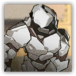
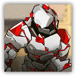

泥岩巨像 Mudrock Colossus
近战 物理；精英 法术造物

|  |
泥岩的源石技艺造物。不具备意识，需要其主人本人操纵才能行动。笨重迟缓，但难以击破，拥有极高的物理伤害和生命力。 |
泥岩巨像 | Mudrock Colossus
巨型构装（法术造物），无阵营
AC 18
先攻 -2（8）
HP 404（30d12+210）
速度 20尺
| 调整 | 豁免 | ||
|---|---|---|---|
| 力量 | 25 | +7 | +7 |
| 智力 | 3 | -3 | -3 |
| 调整 | 豁免 | ||
|---|---|---|---|
| 敏捷 | 6 | -2 | +2 |
| 感知 | 8 | -1 | +4 |
| 调整 | 豁免 | ||
|---|---|---|---|
| 体质 | 27 | +7 | +7 |
| 魅力 | 6 | -2 | -2 |
免疫 毒素；目盲，耳聋，力竭，麻痹，石化，中毒
感官 盲视10尺，震颤感知60尺，被动察觉9
语言 无
CR 11（XP 7,200；PB+4）
特质 Traits
不变形态 Immutable Form。巨像无法 变形。
动作 Actions
巨石猛击 Boulder Slam。体质豁免检定：DC19，单个巨像5尺内的生物。失败：81（21d6+8）点钝击伤害并倒地，成功：仅受半伤。
巫术巨像 Hexed Colossus
近战 物理；精英 法术造物
|  |
泥岩的源石技艺造物。创造过程中掺入了萨卡兹的古老巫术，它们是其主人意志的延展。这种源石技艺的原理相当晦涩，相较于普通造物拥有更高的生命力与破坏力。 |
巫术巨像 | Hexed Colossus
超巨型构装（法术造物），无阵营
AC 18
先攻 -2（8）
HP 555（30d20+240）
速度 20尺
| 调整 | 豁免 | ||
|---|---|---|---|
| 力量 | 27 | +8 | +8 |
| 智力 | 3 | -3 | -3 |
| 调整 | 豁免 | ||
|---|---|---|---|
| 敏捷 | 6 | -2 | +3 |
| 感知 | 8 | -1 | +4 |
| 调整 | 豁免 | ||
|---|---|---|---|
| 体质 | 27 | +8 | +8 |
| 魅力 | 6 | -2 | -2 |
免疫 毒素；目盲，耳聋，力竭，麻痹，石化，中毒
感官 盲视10尺，震颤感知60尺，被动察觉9
语言 无
CR 14（XP 11,500；PB+5）
特质 Traits
魔法抗性 Magic Resistence。巨像为抵抗法术和其它魔法效应而作的豁免检定具有优势。
不变形态 Immutable Form。巨像无法 变形。
动作 Actions
巨石猛击 Boulder Slam。体质豁免检定：DC21，单个巨像5尺内的生物。失败：100（26d6+8）点钝击伤害并倒地。成功：仅受半伤。